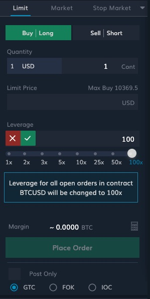
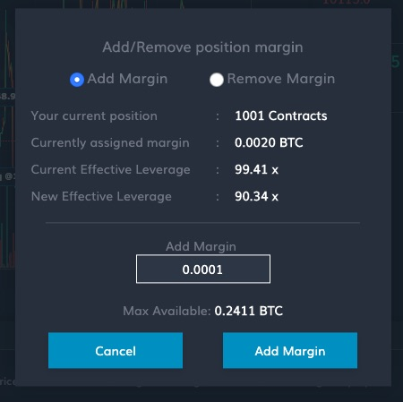

Leverage
Leverage is the feature which enables a trader to open and control positions much larger than her capital. In the case of margin trading, this is achieved through explicit borrowing. For e.g. to buy 1 Bitcoin for $10,000, a trader with $1000 capital can borrow $9000 in margin trading. In this trade, the trader’s leverage is 10x.
In futures, leverage is intrinsic to the contract. Maximum leverage allowed in provided in the contract specifications, and it can be used to compute the minimum amount of capital required (Initial Margin) to open a position of a given size.
Order Leverage vs. Position Leverage
In Delta Exchange, Order Leverage and Position Leverage are two independent but related quantities. Order Leverage is the leverage at which all open orders are margined. Order leverage for any contract can be set using the leverage slider in the order placement tab.

For Order Leverage, it is important to note the following:
- Order Leverage for each contract can be set independently
- All open orders in a given contract are margined at the same leverage. This means that if you change the selected leverage from the leverage slider, leverage of all your open orders in that contract will be updated.
- When you change your Order Leverage, the leverage of your open positions remains unimpacted
Position Leverage is the leverage of your position at the current Mark Price. It is also sometimes referred to as the ‘Effective Leverage’, and is computed using the following equation:
As is evident from the formula above, Position Leverage can be changed by changing Position Margin. If you increase Position Margin, Position Leverage goes down. Conversely, if you reduce Position Margin, Position Leverage goes up. The pencil icon next to the Position Leverage number opens a pop-up which lets you add/ remove margin to/ from an open position.

For Position Leverage, it is important to note the following:
- a position can be acquired through multiple orders placed at different Order Leverages. In such cases, the Position Margin will be the sum of the Order Margins, and will be the main determinant of the Position Leverage
- When Unrealised PnL is 0, which is usually the case when you have just acquired a position, Position Leverage is same as the Order Leverage of the order which resulted in this position.
- When price moves in your favour: Unrealised PnL is positive and thus, Position Leverage goes down
- When price moves against you: Unrealised PnL is negative and thus, Position Leverage moves up
- Changing Order Leverage has no bearing on the margin assigned to a Position (i.e. the Position Margin).
You can also read this blog post which explains through examples how to effectively set Order Leverage and Position Leverage to utilise margin efficiently.